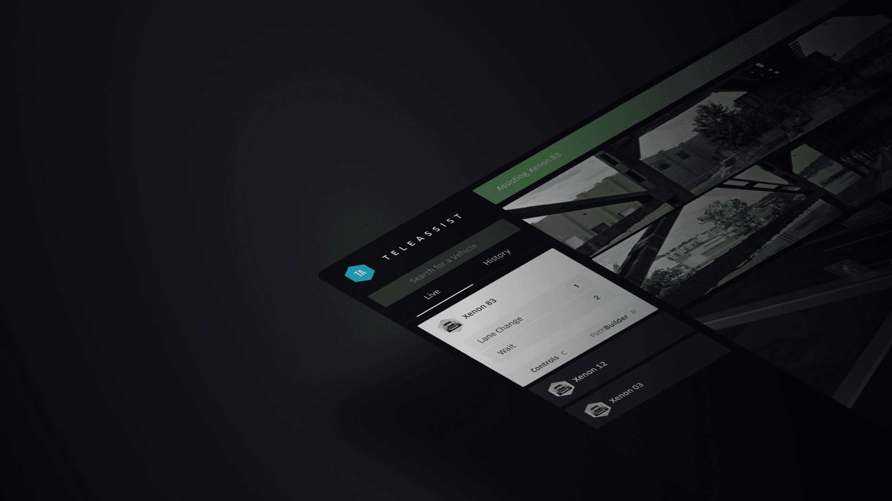
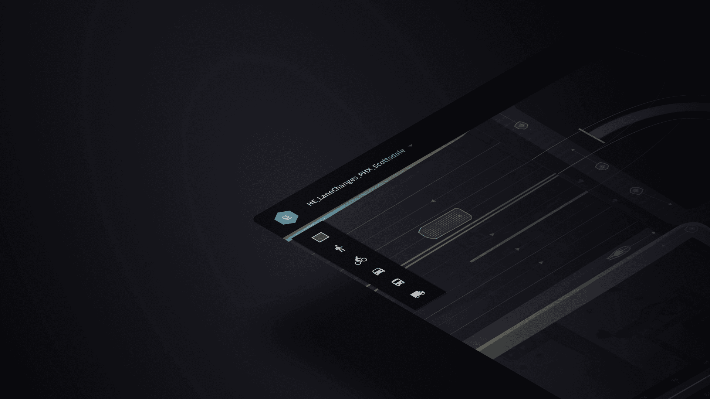
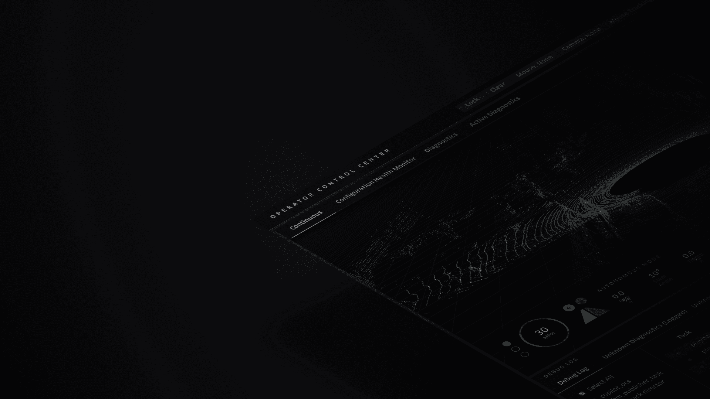
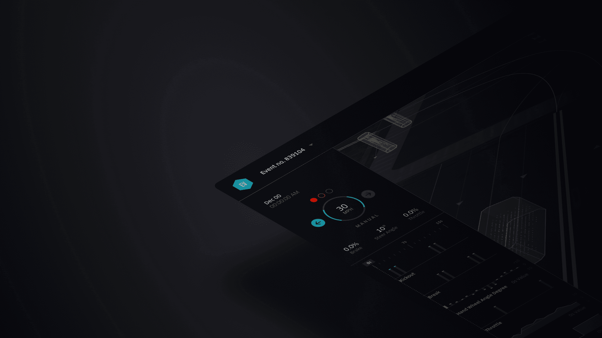

Uber Autonomous Vehicles
As Uber’s self-driving fleet expands, our mission is to ensure every rider enjoys a safe, seamless, and cutting-edge experience. To make this vision a reality, we’re creating an advanced suite of tools that monitor vehicle health, provide real-time support, and perform rigorous stress testing—ensuring that every ride is as smooth and secure as possible.
As the founding designer, I’m at the forefront of building a scalable, intuitive data environment that empowers teams with the insights they need to drive Uber’s autonomous innovation. By transforming complex data into actionable intelligence, my work accelerates decision-making and enhances vehicle performance and safety. My designs are pivotal in shaping the future of autonomous mobility, enabling Uber to deliver an unparalleled, reliable experience while positioning the company as a leader in autonomous vehicle technology.

Remote Assistance Console
Data explorations that surface Netflix specific insights on cast, directors, writers and other key production personnel.

Simulation Environment
Data explorations that surface Netflix specific insights on cast, directors, writers and other key production personnel.

Software Health Manager
Data explorations that surface Netflix specific insights on cast, directors, writers and other key production personnel.

Event Visualizer
Data explorations that surface Netflix specific insights on cast, directors, writers and other key production personnel.